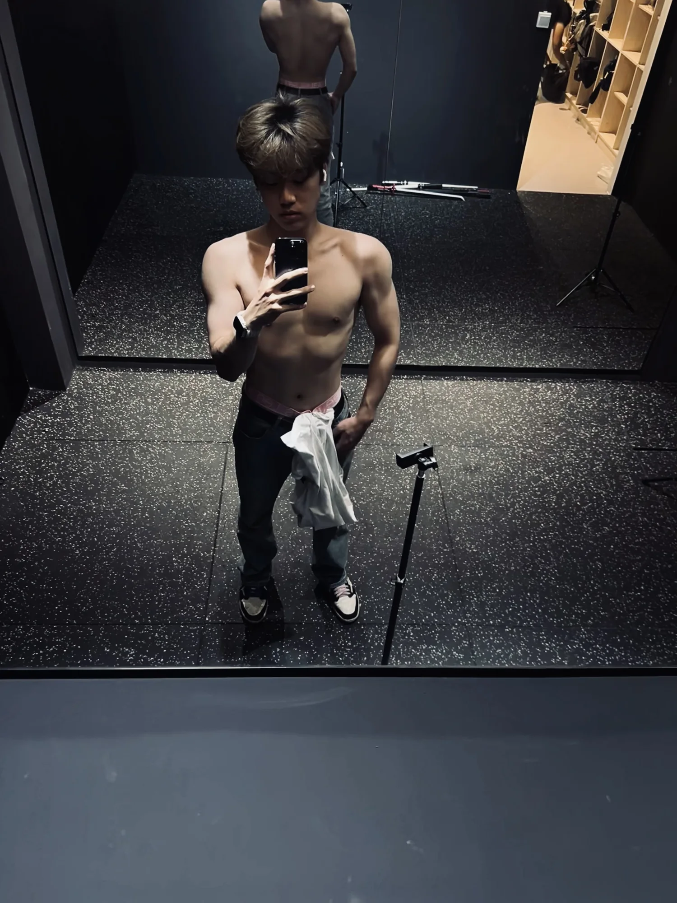
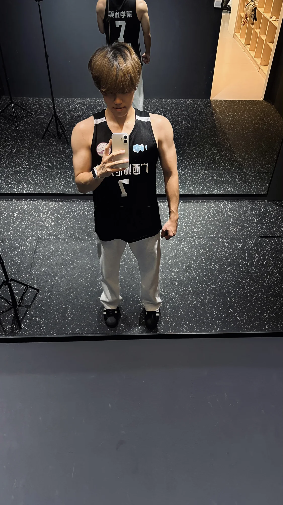
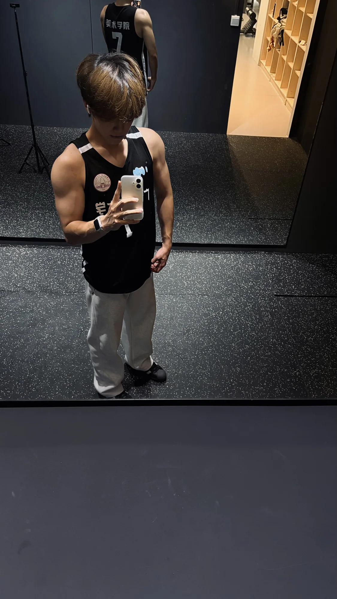
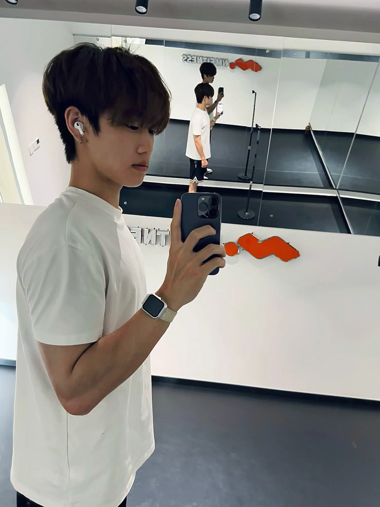
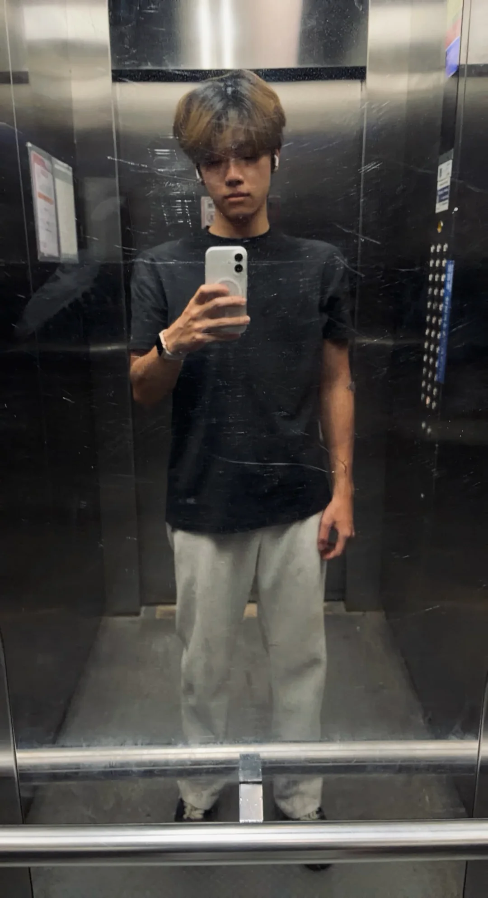

Fitness is not about earning approval. The person I want to surpass is the person I used to be.
first step
consistency
progress
discipline
becoming
training
movement
training
becoming
discipline
direction
movement
001

First Step
Walking into a gym for the first time took courage. The equipment, the space, and training itself were unfamiliar.
notes
Courage
Beginnings
First Step
Practice
Change
002
Consistency
One workout became another. Days became weeks, and weeks became months. I kept showing up.
notes
Reflection
Routine
Movement
Focus
Self
003
Progress
Almost a year of consistent training has changed my physique and the way I carry myself.
notes
Focus
Effort
Growth
Physique
Progress
004

Becoming
Fitness is not about earning approval. The person I want to surpass is the person I used to be.
notes
Self
Physique
Identity
Style
Direction
005

Reflection
Almost one year is only the beginning. I will keep training, improving, and discovering how far I can go.
notes
Notes
Physique
Movement
Storytelling
Storytelling
Built one day at a time.
One workout became another. Days became weeks, and weeks became months. I kept showing up.
Today 17:01
Hey Tony!
You look different now.
When did that happen?
Today 17:02
One workout at a time.
Almost one year of showing up.
Keep going.

The first step
Showing up
The work
Progress
Keep going
reflections
I’m Tony, Tang Shengbin, from Guilin, Guangxi. Training has become an important part of my life.

Walking into a gym for the first time took courage. The equipment, the space, and training itself were unfamiliar.
Almost a year of consistent training has changed my physique and the way I carry myself.
Fitness is not about earning approval. The person I want to surpass is the person I used to be.
I’m grateful to the version of myself who found the courage to walk into the gym for the first time.
I’m Tony, Tang Shengbin, from Guilin, Guangxi. Training has become an important part of my life.
the journey
07
what I learned


ナイキ
Quantive
Syntrix
フィマ
Nebula
Aether3
スラッ
Walking into a gym for the first time took courage. The equipment, the space, and training itself were unfamiliar.
The person behind the progress
Almost a year of consistent training has changed my physique and the way I carry myself.
4
Body
Built through training
8
Discipline
Returning each day
6
Style
A life beyond the gym
1o+
Code
Another side of me
The Journey
From the first step to the decision to keep going.
The Beginning
Walking into a gym for the first time took courage. The equipment, the space, and training itself were unfamiliar.
01
/chapter
.png)
My process
One workout became another. Days became weeks, and weeks became months. I kept showing up.
The decision
I used to be overweight and unmotivated. One casual comment made me wonder what would happen if I changed myself.
The first visit
Walking into a gym for the first time took courage. The equipment, the space, and training itself were unfamiliar.
The repetition
One workout became another. Days became weeks, and weeks became months. I kept showing up.
Keep going
Almost one year is only the beginning. I will keep training, improving, and discovering how far I can go.
Moments
©
Questions
The thoughts and moments behind my training journey.
I used to be overweight and unmotivated. One casual comment made me wonder what would happen if I changed myself.
Walking into a gym for the first time took courage. The equipment, the space, and training itself were unfamiliar.
Almost a year of consistent training has changed my physique and the way I carry myself.
Almost one year is only the beginning. I will keep training, improving, and discovering how far I can go.